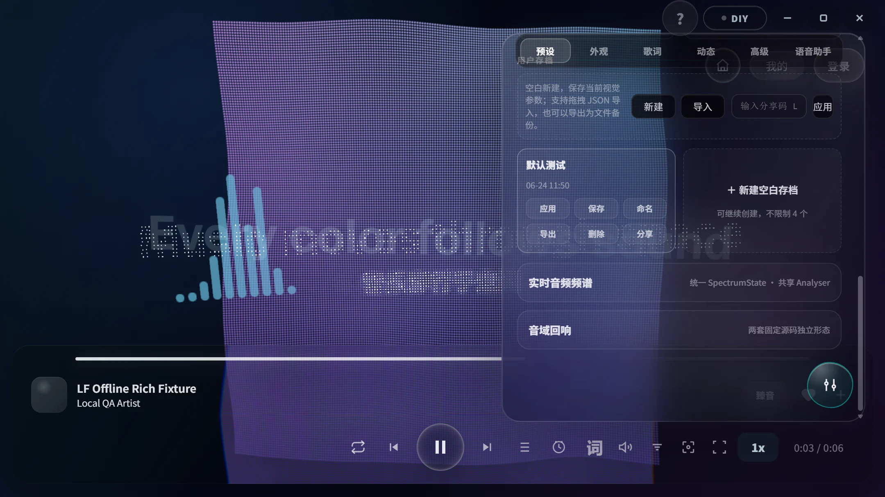
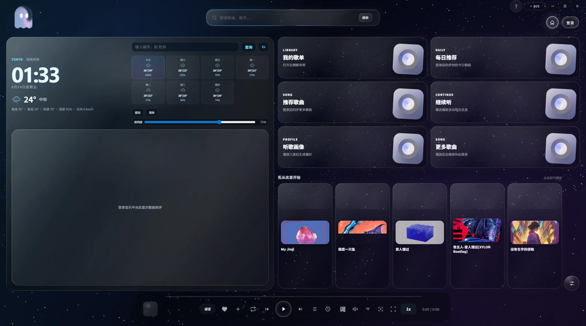
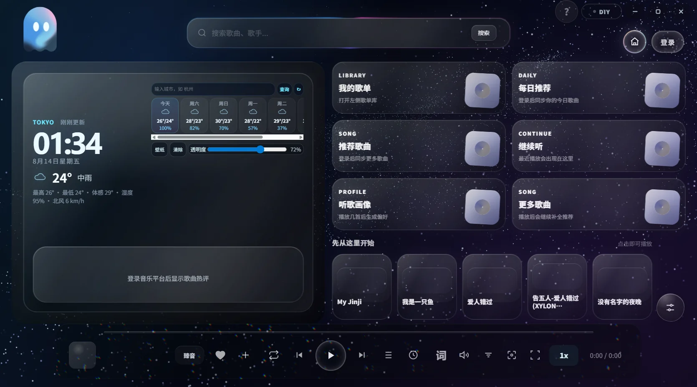
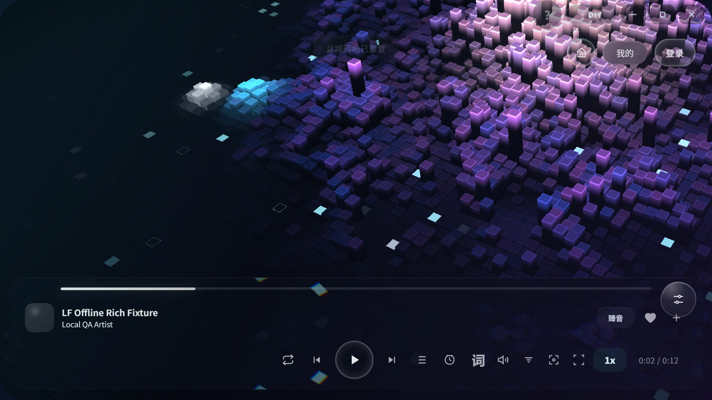
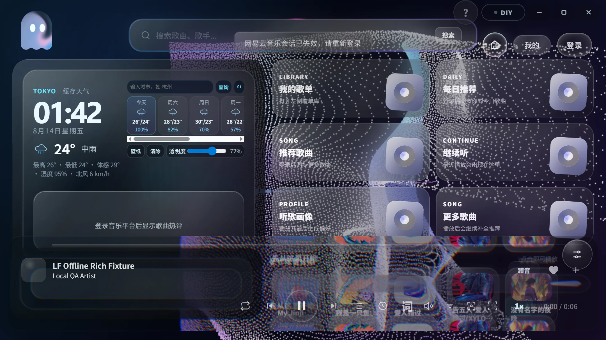

AUDIO REACTIVE
频谱、粒子与歌词，在同一片景深中呼吸。
音频频谱跟随节奏变化，歌词与 3D 歌单保持清晰层级；多套粒子预设可以即时切换。
- 两种音域回响
- 空间化舞台歌词
- 实时音频频谱

Windows 10 / 11 · GPL-3.0-only
LumiField 把本地播放、动态歌词、音频频谱、粒子舞台与 3D 歌单连成一个可以触碰、旋转和沉浸其中的空间。

ONE CONTINUOUS SPACE
每一层都围绕正在播放的声音展开。选择一个视角，让界面跟随你的聆听方式改变。
AUDIO REACTIVE
音频频谱跟随节奏变化，歌词与 3D 歌单保持清晰层级；多套粒子预设可以即时切换。

MUSIC IN MOTION
从主页进入搜索、本地音乐、天气电台与歌单；副界面的 3D 歌单把切歌变成可见的空间动作。

YOUR OWN FIELD
视觉控制台支持调整舞台表现并保存预设；动态壁纸、桌面歌词和伴唱分离继续延伸桌面体验。

BUILT AROUND LISTENING
自由移动视角，让频谱与粒子对鼠标和音乐同时响应。
信息保持清晰层级，播放操作始终触手可及。
动态天气、每日入口和电台一起进入主页。
队列、历史与自定义内容保存在你的设备中。
可交互开屏、分层性能策略和降低动态效果支持，让进入舞台更自然。
THE REAL INTERFACE
天气、电台、搜索、继续听与歌单入口集中在一处。
音频频谱、歌词、3D 歌单与粒子预设按照明确层级共同呈现。

账号、反馈、设置与个人内容在独立面板中保持清楚。
预览、调整并保存视觉预设，不中断正在播放的音乐。
OPEN BY DESIGN
LumiField 以 GPL-3.0-only 发布。源码、第三方归属、修改记录、构建说明与发布哈希都保持公开。
在 GitHub 检查源码VERSION 1.1.43 · WINDOWS X64
适用于 Windows 10 / 11 64 位系统。请只从 LumiField 的正式 GitHub Release 下载。
695E54F6473F7CCBAE811BE9BE4DEAEACF0E7A9CA7461FFDB38261D6614375CB
Tag v1.1.43 · Commit f20b09f2ab27
下载后可在 PowerShell 中运行：Get-FileHash .\LumiField-1.1.43-Setup.exe -Algorithm SHA256
BEFORE YOU ENTER
当前正式版本面向 Windows 10 / 11 64 位系统。官网不会把未发布的平台版本标记为可下载。
是。LumiField 免费提供，并以 GPL-3.0-only 发布。你可以在 GitHub 查看对应版本源码、许可证、构建说明与第三方声明。
请从正式 GitHub Release 下载，并将本地文件的 SHA-256 与本页及 Release 中公布的值逐字核对。
Cookie、账号状态、播放历史、自定义歌词、封面和缓存保存在用户设备中，不进入公开仓库。具体规则以项目隐私说明为准。
你可以检查源码、提交问题或自愿赞助。赞助不会影响软件的免费下载与 GPLv3 开源属性。